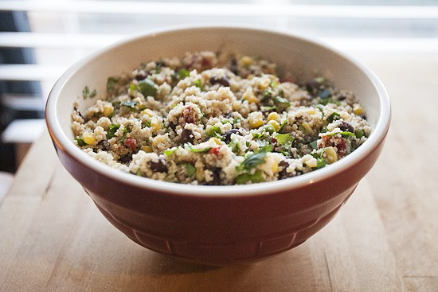

Aztec CousCous

Description
Simple, easy, and effective at pretending you KNOW
what you are doing! With these fresh ingredients, it's not
only easy, its quite healthy to boot! Serve it cold or hot,
this versatile dish is great for any occasion.
Deliciously fresh and always a show stopper. Be prepared to get asked
to bring this EASY dish to every get-together! Just
don't tell'em how easy it was or they might ask you to start
bringing the puff pastries or spinach rolls.
Ingredients
- 1 cup Cous Cous
- 1/2 teaspoon Cumin (ground)
- 1 teaspoon Salt (to taste)
- 1 cup Water (up to 1 1/4 cups)
- 15 ounce Black Beans (canned)
- 1 cup Corn (kernals)
- 1/2 cup Red Onion
- 1/4 cup Cilantro (fresh, minced)
- 1 Jalapeño Pepper (minced)
- 3 Tablespoons Olive Oil (roasted garlic infused if available)
- 3 Tablespoons Lime Juice (up to 4 Tbsp, freshly squeezed)
Steps
-
Mix couscous, cumin, and
salt in large heatproof storage container.
-
Pour 1 cup of boiling water into mixed
ingredients.
-
Cover tightly and let sit until liquid absorbed.
(roughly 10 minutes).
-
If couscous isn't quite done, pour another
1/4th cups of boiling
water, cover, and let sit again until liquid is absorbed.
-
Fluff up with fork.
-
Toss in the beans, corn,
onion, cilantro, and
Jalapeño
-
Mix in olive oil and lime juice to taste.
-
Serve warm or at room temperature.